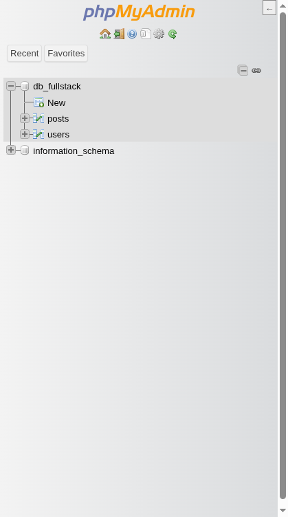
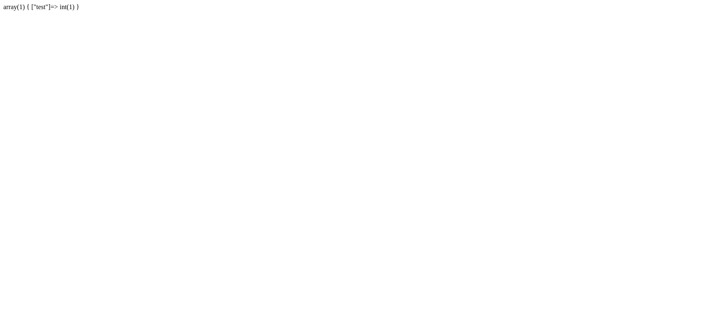

Bygga en CRUD-applikation: Enkel Blogg
I detta avsnitt bygger vi en komplett men enkel bloggapplikation från grunden med PHP och MariaDB/MySQL. Målet är att praktiskt demonstrera CRUD-operationerna (Create, Read, Update, Delete) och integrera andra viktiga webbkoncept som databasinteraktion med PDO, användarautentisering, sessionshantering och filuppladdning.
Vi börjar med en mycket grundläggande struktur och kodstil för att sedan i slutet refaktorera och förbättra koden, bland annat genom att introducera type hinting.
Applikationens Funktioner:
- Användare kan registrera sig och logga in.
- Inloggade användare kan skapa, redigera och ta bort sina egna blogginlägg.
- Användare kan ladda upp en bild till varje blogginlägg.
- Alla besökare kan se listan över blogginlägg och läsa enskilda inlägg.
- En enkel "admin"-sektion för inloggade användare att hantera sina inlägg.
1. Databasdesign
Vi behöver två huvudtabeller: en för användare (users) och en för blogginlägg (posts).
users tabell:
CREATE TABLE users (
id INT AUTO_INCREMENT PRIMARY KEY,
username VARCHAR(50) NOT NULL UNIQUE,
email VARCHAR(100) NOT NULL UNIQUE,
password_hash VARCHAR(255) NOT NULL, -- Lagrar hashat lösenord
created_at TIMESTAMP DEFAULT CURRENT_TIMESTAMP
);
id: Unik identifierare för användaren.username: Användarnamn för inloggning (unikt).email: Användarens e-post (unik).password_hash: Lagrar det säkert hashade lösenordet (inte lösenordet i klartext!).created_at: När användarkontot skapades.
posts tabell:
CREATE TABLE posts (
id INT AUTO_INCREMENT PRIMARY KEY,
user_id INT NOT NULL, -- Vem som skrev inlägget
title VARCHAR(255) NOT NULL, -- Inläggets titel
body TEXT NOT NULL, -- Innehållet i inlägget
image_path VARCHAR(255) NULL, -- Sökväg till uppladdad bild (valfritt)
created_at TIMESTAMP DEFAULT CURRENT_TIMESTAMP,
updated_at TIMESTAMP DEFAULT CURRENT_TIMESTAMP ON UPDATE CURRENT_TIMESTAMP, -- När inlägget senast ändrades
FOREIGN KEY (user_id) REFERENCES users(id) ON DELETE CASCADE -- Koppling till users. Om användaren raderas, raderas även hens inlägg.
);
id: Unik identifierare för inlägget.user_id: Referens tillidiusers-tabellen. Visar vem som äger inlägget.title: Inläggets rubrik.body: Brödtexten i inlägget.image_path: Sökvägen till den associerade bilden (om någon laddats upp).NULLom ingen bild finns.created_at: När inlägget skapades.updated_at: Uppdateras automatiskt när inlägget ändras.FOREIGN KEY ...: Definierar en relation mellanposts.user_idochusers.id.ON DELETE CASCADEbetyder att om en användare tas bort, tas alla dennes inlägg också bort automatiskt.
Skapa dessa tabeller i din MariaDB/MySQL-databas (t.ex. via phpMyAdmin eller kommandoraden). Vi antar att databasen heter db_fullstack som i tidigare exempel.

2. Projektstruktur (Initial)
Vi börjar med en väldigt platt och enkel filstruktur. Skapa följande filer och mappar i roten av ditt projekt (t.ex. i app/public om du följer docker-compose-exemplet):
.
├── admin/
│ ├── index.php # Admin dashboard (lista inlägg, länkar till create/edit/delete)
│ ├── create_post.php # Formulär & logik för att skapa inlägg
│ ├── edit_post.php # Formulär & logik för att redigera inlägg
│ └── delete_post.php # Logik för att ta bort inlägg
├── includes/
│ ├── config.php # Databasuppgifter och annan konfiguration
│ ├── database.php # Funktion för att ansluta till databasen (PDO)
│ └── functions.php # Hjälpfunktioner (vi lägger till här senare)
├── uploads/ # Mapp där uppladdade bilder sparas (måste vara skrivbar för webbservern!)
├── index.php # Hemsida, listar blogginlägg
├── login.php # Inloggningsformulär & logik
├── logout.php # Logik för att logga ut
├── post.php # Visar ett enskilt blogginlägg
└── register.php # Registreringsformulär & logik
admin/: Innehåller sidor som endast inloggade användare ska kunna nå.includes/: Innehåller återanvändbar kod som konfiguration och databasanslutning.uploads/: Här hamnar bilder som användare laddar upp. VIKTIGT: Se till att webbservern (Apache i vårt Docker-exempel) har skrivrättigheter till denna mapp!
3. Grundläggande Setup
Konfiguration (includes/config.php)
Skapa filen includes/config.php och lägg in dina databasuppgifter.
<?php
// includes/config.php
// Databasuppgifter (anpassa efter din miljö)
define('DB_HOST', 'mysql'); // Matchar service-namnet i docker-compose.yml
define('DB_NAME', 'db_fullstack');
define('DB_USER', 'db_user');
define('DB_PASS', 'db_password');
// Teckenkodning för PDO-anslutningen
define('DB_CHARSET', 'utf8mb4');
// Starta sessioner (viktigt för login!)
// Görs en gång här så det gäller alla sidor som inkluderar config.php
if (session_status() === PHP_SESSION_NONE) {
session_start();
}
// Base URL (valfritt, men kan vara praktiskt för länkar)
// Anpassa port om du använder en annan än 8060
define('BASE_URL', 'http://localhost:8060');
// Sökväg till uppladdningsmappen
define('UPLOAD_PATH', __DIR__ . '/../uploads/'); // __DIR__ ger sökvägen till includes/
// Aktivera felrapportering under utveckling
// Stäng av på en produktionsserver!
ini_set('display_errors', 1);
ini_set('display_startup_errors', 1);
error_reporting(E_ALL);
?>
Mini-exempel: Vad gör PDO-options?
Innan vi bygger connect_db() – ett snabbtest för att förstå varför vi sätter vissa options. Skapa tillfälligt en fil test_pdo.php (du kan ta bort den efteråt):
<?php
require_once 'includes/config.php';
$pdo = new PDO("mysql:host=" . DB_HOST . ";dbname=" . DB_NAME . ";charset=" . DB_CHARSET, DB_USER, DB_PASS);
$result = $pdo->query("SELECT 1 as test")->fetch();
var_dump($result); // Vad får du? Både numeriska index (0 => "1") OCH kolumnnamn ("test" => "1")
?>
Lägg sedan till denna rad före $result:
$pdo->setAttribute(PDO::ATTR_DEFAULT_FETCH_MODE, PDO::FETCH_ASSOC);
Kör igen. Nu får du bara associativa nycklar (["test" => "1"]) – lättare att använda med $result['test'] istället för att hålla reda på index. Detta är vad ATTR_DEFAULT_FETCH_MODE gör.

Databasanslutning (includes/database.php)
Skapa filen includes/database.php. Vi använder PDO (PHP Data Objects) för att ansluta. PDO ger ett konsekvent sätt att interagera med olika databaser och hjälper till att skydda mot SQL-injektion genom "prepared statements".
<?php
// includes/database.php
require_once 'config.php'; // Inkludera konfigurationen
/**
* Skapar och returnerar en PDO-databasanslutning.
*
* @return PDO PDO-anslutningsobjektet.
* @throws PDOException Om anslutningen misslyckas.
*/
function connect_db(): PDO {
// Data Source Name (DSN)
$dsn = "mysql:host=" . DB_HOST . ";dbname=" . DB_NAME . ";charset=" . DB_CHARSET;
// Alternativ för PDO-anslutningen
$options = [
PDO::ATTR_ERRMODE => PDO::ERRMODE_EXCEPTION, // Kasta exceptions vid fel
PDO::ATTR_DEFAULT_FETCH_MODE => PDO::FETCH_ASSOC, // Hämta resultat som associativa arrayer
PDO::ATTR_EMULATE_PREPARES => false, // Använd prepared statements
];
try {
$pdo = new PDO($dsn, DB_USER, DB_PASS, $options);
return $pdo;
} catch (PDOException $e) {
// Logga felet istället för att skriva ut känslig info
error_log("Database Connection Error: " . $e->getMessage());
// Visa ett generellt felmeddelande till användaren
throw new PDOException("Kunde inte ansluta till databasen. Försök igen senare.", (int)$e->getCode());
// Eller: die("Kunde inte ansluta till databasen. Kontakta administratör.");
}
}
// För att använda anslutningen på en sida:
// $pdo = connect_db();
?>
Förklaring:
- Vi inkluderar
config.phpför att få databasuppgifterna. $dsn: En sträng som specificerar databastyp, värd, databasnamn och teckenkodning.$options: Viktiga inställningar för PDO:PDO::ATTR_ERRMODE => PDO::ERRMODE_EXCEPTION: Gör att PDO kastar ett undantag (PDOException) om ett databasfel inträffar. Detta är att föredra framför att bara fåfalseeller varningar, då det ger tydligare felhantering.PDO::ATTR_DEFAULT_FETCH_MODE => PDO::FETCH_ASSOC: Gör att när vi hämtar data (fetch(),fetchAll()) får vi resultatet som en associativ array (kolumnnamn => värde) istället för både numeriska index och kolumnnamn (vilket är defaultPDO::FETCH_BOTH).PDO::ATTR_EMULATE_PREPARES => false: Tvingar PDO att använda databasserverns inbyggda "prepared statements" istället för att emulera dem i PHP. Detta är generellt säkrare och ibland mer effektivt.
try...catch: Vi försöker skapa ett nyttPDO-objekt. Om det misslyckas (fel lösenord, databasen nere etc.) kastas enPDOException. Vi fångar den, loggar det tekniska felet (för utvecklaren) och kastar sedan ett nytt, mer användarvänligt, undantag eller avslutar skriptet meddie(). Skriv aldrig ut det detaljerade felet$e->getMessage()direkt till användaren i produktion!
Nästa: Del 2: Autentisering – Registrering, inloggning, sessioner och logout